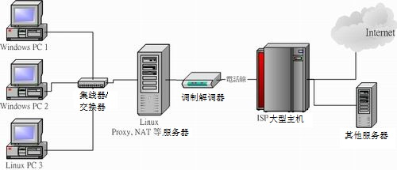

老是看到有朋友在网络上哀嚎说：『我的网络不通啊！』还有比较奇怪的是『啊！怎么网络时通时不通』之类的问题，
这类的问题其实主要可以归类为硬件问题与软件设定问题。硬件的问题比较麻烦，因为需要透过一些专门的装置来分析硬件；
至于软件方面，绝大部分都是设定错误或者是观念错误而已，比较好处理啦 (第四章谈到的就是软件问题)！
OK！我们先来看看网络在哪里可能会出问题吧！
 6.1.1
硬件问题：网络线材、网络设备、网络布线等
6.1.1
硬件问题：网络线材、网络设备、网络布线等
在第二章的网络基础当中我们曾提到很多的网络基础概念，
以及一些简单的硬件维护问题。以一个简单的星形联机来说，我们可以假设他的架构如同下图所示：

图 6.1-1、局域网络的联机状态示意图
在上面的图示当中，"Linux PC3" 要连到 Internet 上面去的话，需要透过网络线、交换器、 NAT 主机 (Linux 服务器或
IP 分享器)、ADSL 调制解调器，附挂电话线路、ISP 自己的机房交换器，以及 Internet 上面的所有媒体设备
(包括路由器、网桥、其他网络线等等)；那么哪些地方可能会出问题啊？
- 网络线材的问题：
在上面的图示中，可以发现，其实网络接口设备中，使用最多的就是网络线啦！要注意网络线分成并行线与跳线 (RJ-45接头)，而并不是所有的设备都支持自动分辨跳线与并行线的功能的！
所以你必须要了解到你的设备 (Hub/Switch/调制解调器) 所支持的网络线；另外，如果你的网络线有经过门缝处或者是容易凹折处，
那很有可能由于经常性的凹折导致电子讯号不良，所以你需要注意一下这些事情：
- 网络线被截断；
- 网络线过度扭曲变形造成讯号不良；
- 自制网络接头 (如 RJ-45 跳线头) 品质不良；
- 网络接头与设备 (如 Hub) 接触不良；
- 网络卡、Hub 及 Router 等网络设备的问题：
另外，还有一些网络设备也会有问题，常见的问题如下：
- 网络卡不稳定、质量不佳，或者与整体系统的兼容度不佳 (网络卡也是会坏的)；
- 各网络设备的接头不佳，接触不良，造成讯号衰减 (经常的拔插就有可能发生)；
- 由于网络设备所在环境恶劣 (例如过热) 导致的当机问题 (鸟哥经常遭遇到 switch 热当的问题)；
- 各网络设备使用方法不良，造成设备功能衰减 (switch 常常插电/断电容易坏喔)；
- 设备配置的规则：
在各个设备的配置上是有一定的规则的，而最容易发生的问题就是太长的网络线会造成讯号的衰减，
导致网络联机的时间太长甚至无法联机。我们曾在网络基础当中谈过以太网络最长的支持距离 (10BASE5 最长可达 500m)，
还有一些其他网络媒体配置的问题你必须晓得的：
- 使用错误的网络线，最常发生在并行线与跳线的分别 (现在比较少见这个问题了)！
- 架设的网络线过长，导致讯号衰减太严重。例如以太网络 CAT5e 的线理论限制长度大概是在 90
公尺左右 (虽然 10BASE5 可达 500m)，若两个设备 (Hub/主机之间) 长度大于 90
公尺时，自然就容易出现讯号发生问题了！
- 其他噪声的干扰，最常发生在网络线或者网络设备旁边有太强的磁波；
- 局域网络上面，节点或者其他的设备太多，过去我们常以所谓的 543 原则来说明：(注1)
- 5 个网段 (segment)。所谓 segment 就在物理连接上最接近的一组计算机，在一个 BNC
网段里面最多只能接 30 台计算机﹐且网线总长不能超过 185m。
- 4 个增益器 (repeater)。也就是将信号放大的装置。
- 3 个计算机群体 (population)。这个不好理解﹐也就是说前面所说的 5 个 segment 之中，
只能有 3 个可以装计算机，其它两个不行。
上述是一些最常见的硬件问题，当然啦，有的时候是设备本身就有问题，而我们在网络基础里面谈到的那个很重要的『
网络布线
』的情况，也是造成网络停顿或通顺与否的重要原因吶！所以，硬件问题的判断比较困难点。
好～底下我们再来聊一聊软件设定的相关问题。
6.1.2 软件问题：IP
参数设定、路由设定、服务与防火墙设定等
所谓的软件问题，绝大部分就是 IP 参数设定错误啊，路由不对啊，还有 DNS 的 IP 设定错误等等的，
这些问题都是属于软件设定啦！只要将设定改一改，利用一些侦测软件查一查，就知道问题出在哪里了！基本的问题有：
- 网络卡的 IP/netmask 设定错误：
例如：同一个 IP 在同一个网段中出现造成 IP 冲突、子网掩码设定错误、网络卡的驱动程序使用错误、网络卡的 IRQ、
I/O Address 的设定冲突等等；
- 路由的问题 (route table)：
最常见的就是预设路由 (default gateway) 设定错误了！或者是路由接口不符所导致的问题，
使得数据封包没有办法顺利的送出去。
- 通讯协议不相符：
最常发生在不同的操作系统之间的通讯传输，例如早期 Windows 98 与 Windows 2000 之间的『网芳』
若要达成沟通，则 Windows 98 必须要加装 NetBEUI 这个通讯协议才行。又例如两部 Linux
主机要透过 NFS 通讯协议传输数据时，两边都得要支持 rpcbind 这个启动 RPC 协议的程序才行！
这些通讯协议我们都会在后面的章节分别介绍的啦！
- 网络负荷的问题 (loading)：
当同时有大量的数据封包涌进 Server 或者是 Hub 或者是同一个网域中，
就有可能造成网络的停顿甚至挂点！另外，如果区网内有人使用 BT (P2P 软件)
或者是有人中毒导致蠕虫充满整个区网，也会造成网络的停顿问题；
- 其他问题：
例如：一些 port 被防火墙挡住了，造成无法执行某些网络资源；应用程序本身的 Bug
问题；应用程序中用户的网络设定错误；以及不同的操作系统的兼容性问题等等。
6.1.3 问题的处理
既然问题发生了，就要去处理他啊！那如何处理呢？以上面的星形联机图示为例，把握两个原则：
- 先由自身的环境侦测起，可以由自身 PC 上的网络卡查起，到网络线、到 Hub 再到调制解调器等等的硬件先检查完。
在这个步骤当中，最好用的软件就是 ping ，而你最好能有两部以上的主机来进行联机的测试；
- 确定硬件没问题了，再来思考软件的设定问题！
实际上，如果网络不通时，你可以依序这样处理：
- 了解问题：这个问题是刚刚发生？还是因为之前我做了什么动作而导致无法联机？
例如之前鸟哥曾经更新过一个核心，结果该核心并不能驱动鸟哥的新网卡...
- 确认 IP：先看看自己的网卡有无驱动？能否取得正确的 IP 相关参数来联机？
- 确认区网联机：利用 ping
来沟通两部主机 (路由器或 IP 分享器)，确定网络线与中继的 hub/switch 工作正常；
- 确认对外联机：看主机或 IP 分享器能否依据第四章的方法顺利取得 IP 参数，并以
ping 的方法确定对外联机是可以成功的 (例如 ping
168.95.1.1)；
- 确认 DNS 查询：利用 nslookup 或 host 或 dig 检查 www.google.com 看看；
- 确认 Internet 节点：可以利用
traceroute 检查各节点是否没问题？
- 确认对方服务器正常服务：是否对方服务器忙线中？或他的机器挂了？
- 确认我方服务器：如果是别人连不上我这部主机，那检查主机某些服务正确启动否？可利用
netstat 检查。或是否某些安全机制的软件没有设定好，例如
SELinux 这项机制；
- 防火墙或权限的问题：是否由于权限设定错误所致？
是否由于你的机器有防火墙忘记启用可联机的埠口所致？这个可以透过
tcpdump 来处理！
透过这些处理动作后，一般来说，应该都可以解决你无法上网的问题了！当然啦，如果是硬件的问题，那么鸟哥也无法帮你，
你可能最需要的是......『送修吧孩子！』